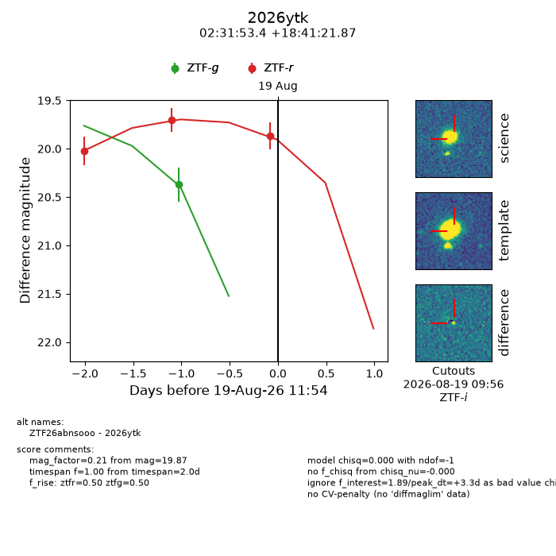
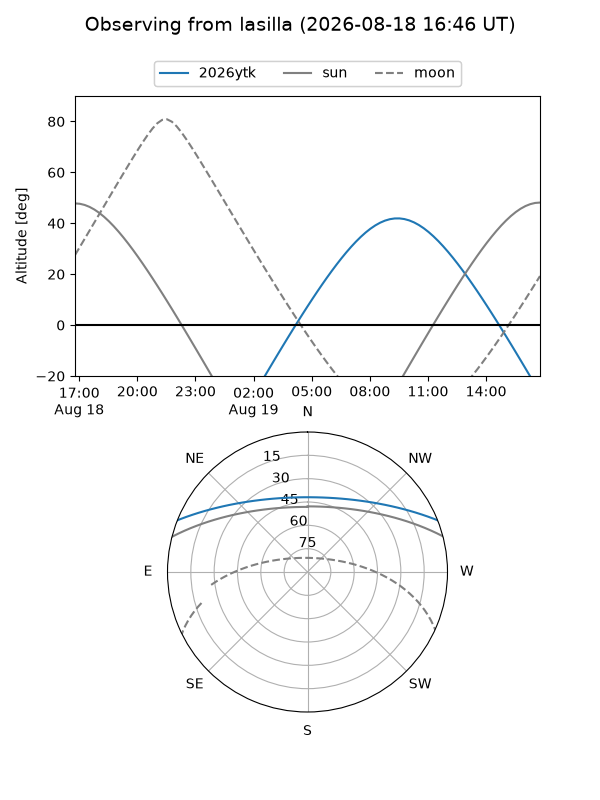
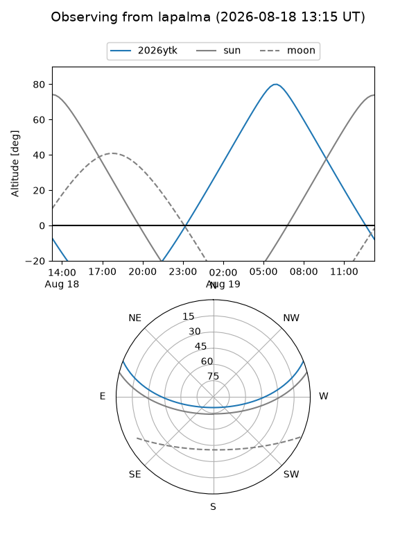
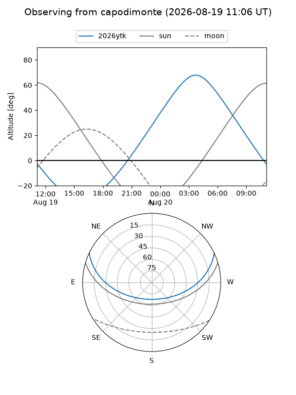
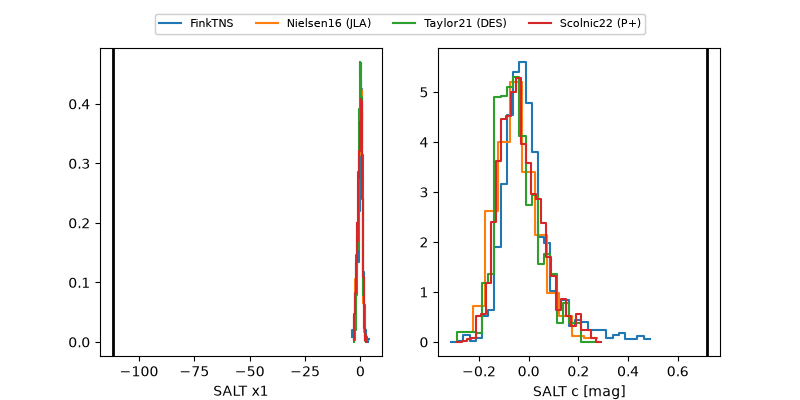

2026ytk
Target 2026ytk at 2026-08-19 11:57
Aliases and brokers:
FINK-ZTF: ztf.fink-portal.org/ZTF26abnsooo
Lasair-ZTF: lasair-ztf.lsst.ac.uk/objects/ZTF26abnsooo
ALeRCE-ZTF: alerce.online/object/ZTF26abnsooo
YSE-PZ: ziggy.ucolick.org/yse/transient_detail/2026ytk
TNS name: wis-tns.org/object/2026ytk
Direct TNS query: direct search
alt names
ZTF26abnsooo (ztf,fink_ztf)
2026ytk (tns,yse)
Coordinates:
equatorial (ra, dec) = 37.9726,+18.68941
equatorial (HMS+DMS) = 02:31:53.42,+18:41:21.87
galactic (l, b) = (153.6615,-38.11568)
Flags:
TNS type: nan
peak dt: +3.3
Photometry:
last ztfg=20.37, ztfr=19.87
1 ztfg, 3 ztfr detections
Lightcurve

Visibility



Additional plots
